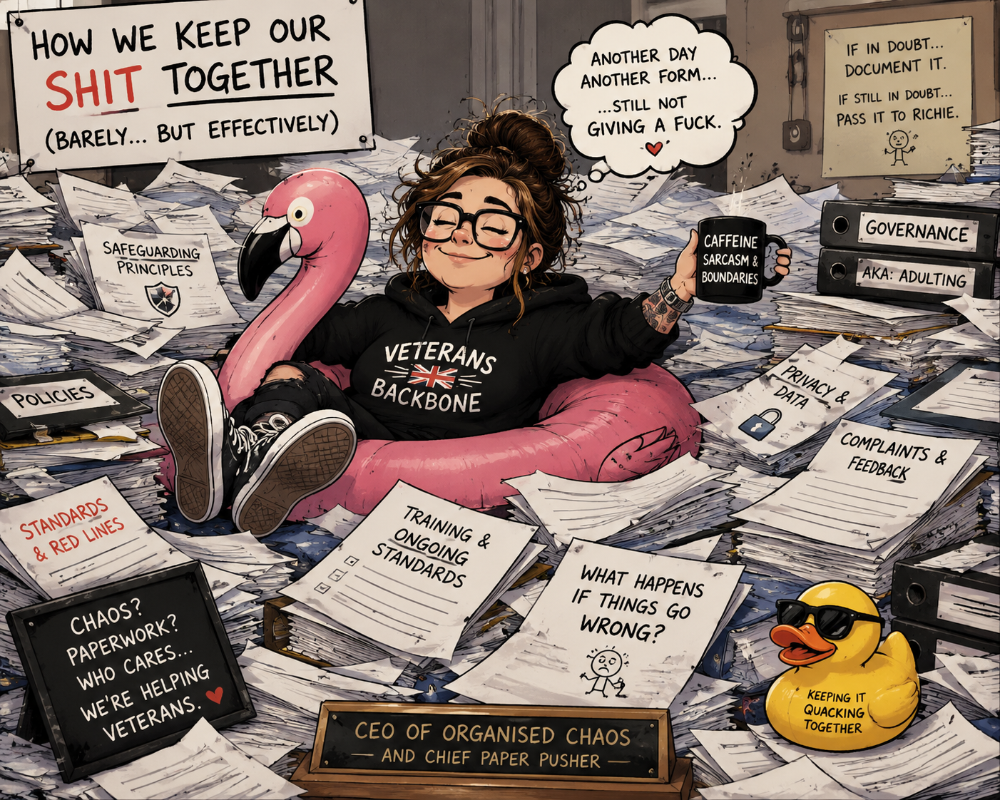
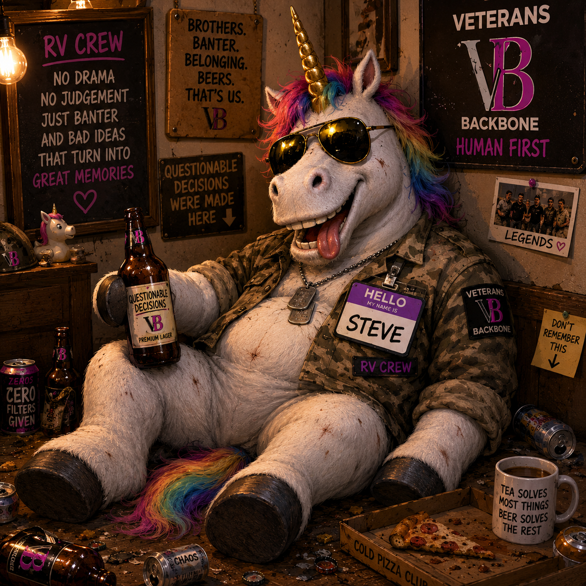

Human first.
You're a person before you're a referral number, case file, diagnosis or problem to be solved.
Veterans Backbone exists to help veterans and their families navigate the messy bits of life — without judgement, without being passed from pillar to post and without expecting you to have all the answers before you ask for help.

Veterans Backbone is about practical, human support. Sometimes that means helping someone work out where the hell to start. Sometimes it's advocacy, information, connections or simply having someone beside you who isn't going to vanish the moment things get complicated.
We don't expect people's lives to fit neatly into boxes, because they generally don't.
Housing, money, family, mental health, isolation, transitioning from military life or just life deciding to throw several things at you at once — it all overlaps. So our support can too.

Mostly because doing the same thing that isn't working would be bloody pointless.
You're a person before you're a referral number, case file, diagnosis or problem to be solved.
Life gets messy. You don't need to tidy it up before you're allowed through the door.
If something isn't ours to fix, that doesn't mean you're getting pointed towards another door and wished good luck.
Veterans Backbone started because I got tired of watching people get passed around systems that were supposed to help them.
Different lives. Different stories. Different battles. But a lot of the scars look surprisingly familiar.
I'm not interested in the "poor me" version of support. I'm interested in practical help, straight answers, people actually listening and not disappearing when things get messy.
I know what it feels like when life changes shape on you. I know what it's like to rebuild when you didn't exactly ask for the demolition.
Same scars.
Different battlefield.
That's really the heart of VB. No judgement. No bullshit. No pretending everything can be fixed with a leaflet and a phone number.
Just people helping people find their footing again.
Whatever support looks like, the aim is the same: helping people move forward rather than leaving them stuck in another revolving door.
Not just to the obvious problem. We look at what's actually going on around it too.
When everything feels tangled together, we help work out what needs dealing with, what can wait and where to start.
Sometimes people need information. Sometimes they need someone standing beside them making sure they're actually being heard.
We work with other organisations and services where they're the right people to help — without pretending one organisation can do everything.
Support isn't only about turning up when everything has gone spectacularly tits-up.
Connection, friendship, purpose, taking the piss, getting out of the house and being around people who get it can matter just as much.
That's a big part of why the RV Crew exists.

You don't need to know exactly what support you need before you contact us. That's kind of the point.